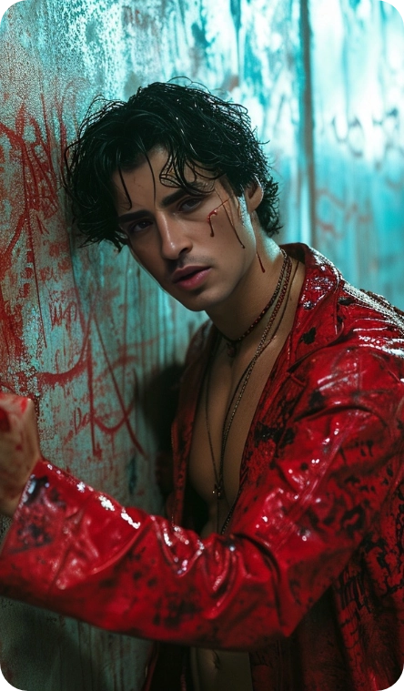
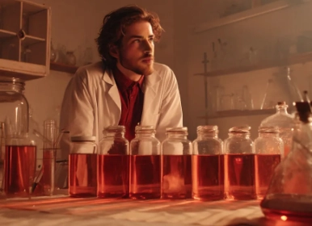
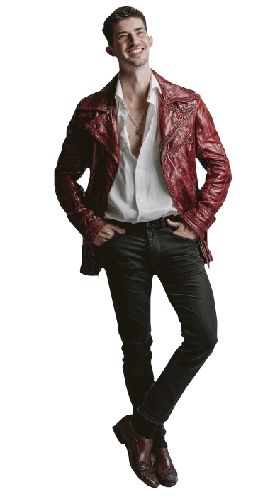
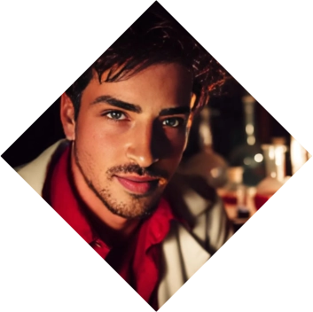
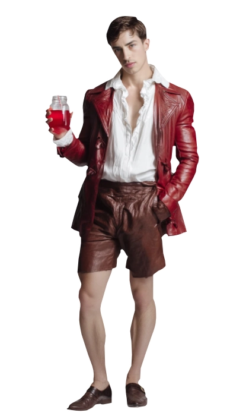

Armando Felipe
Armando Felipe
The Chemist
Once a medic, now a cursed being. One of the interns of a hospital, in his way to become a medic was attacked by a horde of feral vampires who took his blood and left him for dead. Mercy held one of them and offered back the gift of eternal life... but their blood was weak and waning, giving unlife to a new creature, a Thinblood.
Washed away and far from himself, he saw his dreams and his life be cast aside. Having to hide himself from his family and pull away from those he loves, now he seeks a cure to get rid of the vampirism, which had led him to the path of Alchemy. Little by little in his black book he's been collecting his findings so that he can pull away from the shame of what was done to him. ❧
Plot Hooks.
Chemistry. If you need a concotion that can create some fun side effects or even some fun magical effects, he's the guy for you. Smut wise, he's attracted to intelligent and smart individuals, or hard working and motivated individuals. And they should be taller than him.Signature Motif.
Humming. He will always be strumming or humming a soft song to himself or to others because it keeps him grounded with his humanity. There is not a genre he doesn't have a fave song and a memory attached to it.Perfect for...
Age gap, Tsundere and Size gap threads He is a gentle and caring soul that can make space for your muse's love even though he will vehemently deny it. He will ride your dick but only as friends.Goal
Healing.
The Embrace has made him something in between. Not human, not a vampire, but something in between that can take the worst (and the best) of both worlds. He is looking for a cure, hoping to find it in the genetic code of humans and vampires.
obstacle
The Camarilla.
The Camarilla has a strict code regarding the Duskborn. Confined to societies fringes, he tries his best to comply to the powers to be just to diminish them by feeding information to their enemies.«Libre. Como el sol cuando amanece.»
Personal Data

Armando Felipe Arcos
Full Name
28
Apparent age
09/Dec/1990
DOB
Camarilla
Sect
Light Brown
Hair
Blue
Eye color
Thinblood
group
White
Ethnicity
Spaniard
Nationality
Neonate
Rank
1.73m
Height
78 kg
Weight
Spanish and English
Languages
Male
Gender
Homosexual
Preference
Researcher
Profession
Bottom
Position
6" / 4"
length / Girth
Manu Ríos
Faceclaim
35
Real Age
ENTP
MBTI
Character sheet
Attributes
Distinctions
skills
Distillation
Fixatio

Nature
Survivalist
Demeanor
Visionary


Resilient
Resourceful
Tenacious
Self-sufficient
Practical
Ruthless
Inflexible
Cynical
Intolerant
Cold-hearted
Resourceful
Tenacious
Self-sufficient
Practical
Ruthless
Inflexible
Cynical
Intolerant
Cold-hearted
Determined
Inspirational
Creative
Optimistic
Persuasive
Idealistic
Fanatical
Impractical
Naïve
Irrational
Inspirational
Creative
Optimistic
Persuasive
Idealistic
Fanatical
Impractical
Naïve
Irrational
Strength

Dexterity

Stamina
Charisma
Manipulation

Composure
Intelligence
Wits
Resolve
Alchemy
🙪
Specialties
Chemistry
Invention
Seduction
Stoic
Science
Awareness
Insight
Investigation
Occult
Academics
Medicine
Technology
Subterfuge
Athletism
Empathy
Firearms
Survival
Drive
Expression
Other skills
The Blood
Gifts
Vampiric Mending
Can heal all the damage in a scene. Wounds close and limbs reattach (if they haven't been lost for more than one hour).
Thin Blood Alchemy
Able to create magical concoctions to create different magical effects. Add a D6 for a magical advantage if required.
Life-Like
Dramatic. Thinbloods are easily able to pass as humans. A sick and somewhat pale human, but with all of the bodily functions of a human.
Curse
No Disciplines
Thinbloods do not have any disciplines, but they are able to drink blood and obtain disciplines related to the resonance present in the blood.
Hunger and Frenzy
Unless provoked by supernatural means, Thinbloods do not suffer Frenzy like a regular vampire. Hunger is suffered like any other vampire.
Sunlight
Dramatic. While they can be exposed to the sun, the damage they suffer is one superficial damage per turn, allowing them to walk during the day. Under heavy clothes and a thick layer of sunscreen, or heaby clouds, they do not suffer damage
Thin blood Alchemy
I
level
Far Reach Grants a small feat of Telekinesis. Add a D6 to the roll if required.
Profane Hieros Gamos Dramatic. Able to transform itself into a full woman or partially.
Mercurial Tongue Dramatic. Able to use the tongue of whosever blood was used for the ritual.
II
Level
Rose Fragance A counterfeit immitation of "Awe."
Command of the leader A counterfeit immitation of "Compel"
III
Level
Diamond Skin Able to withstand damage from punctures, slashes or impacts.
Hospital Chains Stops the natural process of any vampire or mortal from healing their wounds.
Backgrounds



Signature Assets
Stunning
He is a beautiful man whose looks can stop a cart in the midst of a road. Add a D6 to any social rolls where he can take advantage of his beauty.
Faith Proof
In life, Felipe was a rebel and defied the Catholic church, which has granted him the power to defy True Faith in his unlife.
Day Drinker
Sunlight does not cause any damage, but it renders you weak. He cannot use any of his supernatural abilities during the day.
Other Assets
Camarilla Contact
Felipe has an older vampire as a mentor who, at times, engages in sex with him. Their relationship is romantic at the same time that is protective. Players are encouraged to take this role if they wish.
Contacts
A group of characters that usually provide him with information or products for either protection, sex, blood or money. Players are encouraged to take this role if they wish.
Haven: Laboratory
He has a small appartment where he stays during the day. It is equiped with a small laboratory and library that aids him in his pursue.